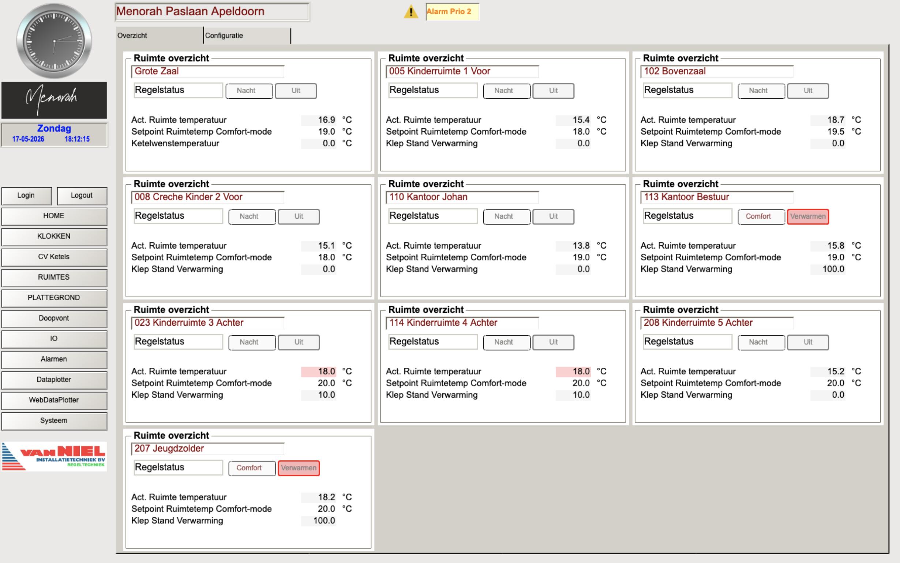
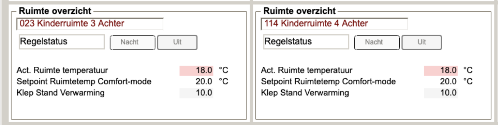

Het Ruimtes scherm geeft een overzicht van alle tien ruimtes met hun actuele temperatuur, status en instellingen. Het comfort setpoint is hier aanpasbaar zonder admin-login.
Temperatuurhiërarchie per ruimte
Elke ruimte kent drie temperatuurniveaus die samen de regelcyclus bepalen:
Overzicht alle ruimtes

📷 screenshots/ruimtes_overzicht.png — nog toe te voegen| Ruimte | Ruimtenr. | Comfort setpoint | Sensor type | Ketel |
|---|---|---|---|---|
| Grote Zaal | — | 19.0°C | Bedraad RTD | Ketel 1 |
| Kinderruimte 1 Voor | 005 | 18.0°C | EnOcean | Ketel 2 |
| Bovenzaal | 102 | 19.5°C | Bedraad RTD + EnOcean | Ketel 2 |
| Creche Kinder 2 Voor | 008 | 18.0°C | EnOcean | Ketel 2 |
| Kantoor Johan | 110 | 19.0°C | EnOcean | Ketel 2 |
| Kantoor Bestuur | 113 | 19.0°C | EnOcean | Ketel 3 |
| Kinderruimte 3 Achter | 023 | 20.0°C | EnOcean — geen verbinding | Ketel 4 |
| Kinderruimte 4 Achter | 114 | 20.0°C | EnOcean | Ketel 4 |
| Kinderruimte 5 Achter | 208 | 20.0°C | EnOcean — geen verbinding | Ketel 4 |
| Jeugdzolder | 207 | 19.0°C | Bedraad RTD | Ketel 4 |
Comfort setpoint aanpassen
Het comfort setpoint per ruimte is aanpasbaar via het Ruimtes overzicht zonder admin-login. Dit is de gewenste temperatuur die de ruimte moet bereiken op het ingestelde "Tijd aan" moment in het klokprogramma.
Klik in het Ruimtes overzicht op het setpoint van de gewenste ruimte en pas de waarde aan. Typische waarden liggen tussen 17°C en 22°C afhankelijk van het gebruik van de ruimte.
Regelstatus begrijpen
Elke ruimte toont een Regelstatus die automatisch wisselt op basis van de huidige situatie. Dit zijn statusindicatoren, geen bedieningsknoppen.
| Status | Betekenis |
|---|---|
| Uit | Geen warmtevraag — klokprogramma inactief, ruimte boven nacht setpoint |
| Verwarmen | Warmtevraag actief — ruimte wordt opgewarmd richting comfort setpoint |
| Comfort | Comfort setpoint bereikt — ruimte wordt op temperatuur gehouden |
| Nacht | Functie nader te onderzoeken in broncode |
EnOcean draadloze sensoren
Acht van de tien ruimtes zijn uitgerust met draadloze EnOcean temperatuursensoren. Deze sensoren communiceren draadloos met de PLC via een EnOcean ontvanger.
Als de temperatuurweergave van een ruimte een roze kader heeft, heeft de EnOcean sensor geen verbinding met het systeem. Zowel de weergegeven ruimtetemperatuur (default 18°C) als de klepstand (default 10%) zijn dan vaste noodwaarden, niet de werkelijke gemeten waarden. Controleer de sensor op batterijspanning, bereik en positie.

📷 screenshots/ruimtes_sensor_storing.png — nog toe te voegenWat te doen bij sensoruitval
1. Ga naar het Alarmen scherm — hier staat een EnOcean Sensor Alarm vermeld.
2. Controleer de sensor fysiek in de ruimte — vervang de batterij (typisch AA of AAA).
3. Als de sensor na batterijvervanging geen verbinding maakt, controleer dan de afstand tot de EnOcean ontvanger en eventuele obstakels.
4. Na herstel van de verbinding verdwijnt de roze markering automatisch en wordt de werkelijke temperatuur weergegeven.
5. Bevestig het alarm in het Alarmen scherm via ACK.
EnOcean sensor ID nummers
Elke EnOcean sensor heeft een uniek ID nummer dat is geconfigureerd in het IO scherm (Config EnOcean 1 en 2). Bij vervanging van een sensor moet het nieuwe ID nummer worden ingevoerd in het systeem (admin vereist).
Configuratiescherm — twee ruimtes vergelijken
De tab "Ruimtes Configuratie" toont twee ruimtepanelen naast elkaar. Via de Prev/Next knoppen kun je per paneel onafhankelijk door alle ruimtes navigeren en zo de instellingen van twee ruimtes vergelijken.
Configuratieparameters per ruimte Admin vereist
| Parameter | Type | Waarde (voorbeeld) | Functie |
|---|---|---|---|
| Setpoint Ruimtetemp Comfort-mode | Invoer | 17.0°C | Comfort setpoint — ook aanpasbaar via het overzichtsscherm zonder admin |
| Setpoint Offset Standby Verwarmen | Invoer | 2.0°C | Standby setpoint = Comfort − 2°C |
| Setpoint Offset Nacht Verwarmen | Invoer | 8.0°C | Nacht setpoint = Comfort − 8°C |
| Dode band | Invoer | 1.0°C | Temperatuurband waarbinnen de regelaar niet ingrijpt |
| Optimiser tijd naar Standby | Invoer | 420 m | Tijd na het comfort moment voordat terugval naar standby begint |
| Kp Verwarmen | Invoer | 50.0 | Proportionele versterking van de klepregeling |
| I-tijd Verwarmen | Invoer | 0 s | Integratietijd van de klepregeling |
| Startwaarde CV klepsturing | Invoer | 20.0% | Beginstand van de klep bij activatie |
| Stop CV klepsturing | Invoer | 5.0% | Klepstand waaronder de klep sluit |